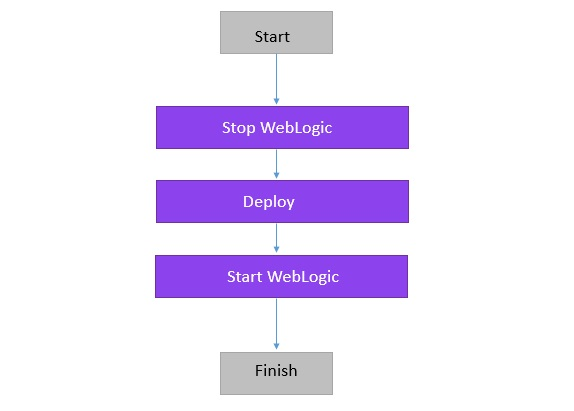
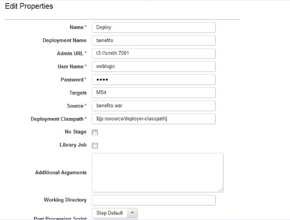
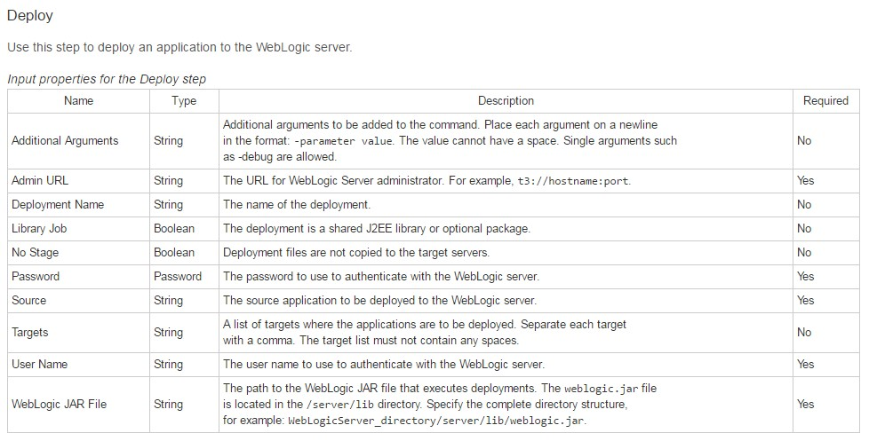
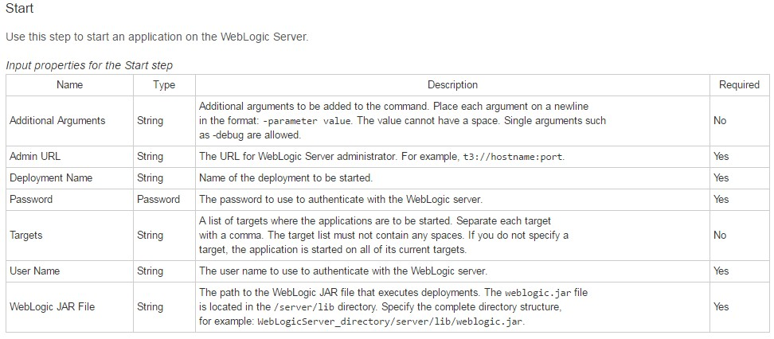
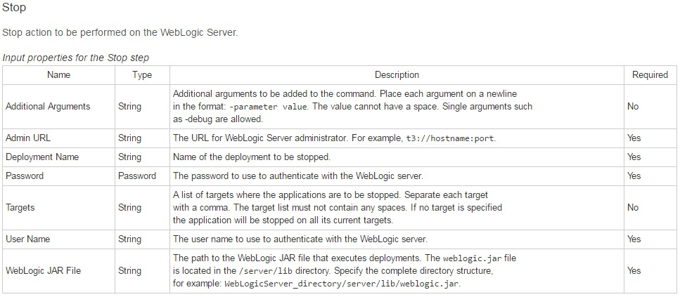

UDeploy
IBM UrbanCode Deploy is a tool for automating application deployments through your environments. It is designed to facilitate rapid feedback and continuous delivery in agile development while providing the audit trails, versioning and approvals needed in production
UrbanCode deploy is an IBM deployment tool, formally called UDeploy. UDeploy orchestrates and automates the deployment of applications, middleware configurations and database changes into development, test and production environments. This tool enables to deploy as often as needed—on demand or on a schedule. By using plug-ins in UDeploy, tasks like integrating the server with existing middleware, organize code from code repositories into components, Design processes to deploy code by using steps that run each required task. And also, tasks like organize components into applications, create environments for each stage of release process. Finally, UDeploy will create an application process to set the deployment order of components, deploy application to any environment.
IBM UrbanCode Deploy provides
Automated, consistent deployments and rollbacks of applications
Automated provisioning, updating, and de-provisioning of cloud environments
Orchestration of changes across servers, tiers and components
Configuration and security differences across environments
Clear visibility: what is deployed where and who changed what
Integrated with middleware, provisioning and service virtualization
Overview
UDeploy has couple of plugins to automate activities carried out on WebLogic server. In this document it is explained that how WebLogic Application deployment plugin is used for managing the WebLogic server deployments. This plugin is configured with UDeploy and includes steps that manage Oracle WebLogic Server. Whoever refers this document should have basic knowledge of WebLogic server and UDeploy application.
Creating and deploying web application with UDeploy
Use standard plug-ins to create a component, define an application that deploys the component to specified environment. The application deployment that is created, deploys a component by moving some files on the local file system to another location on the file system, presumably a location that is used by an application server.
Steps involved
Follow below steps to create a web application using UDeploy, before that you must have an agent that is running on a target computer system. Verify that the agent is installed by clicking Resources > Agents. Add the agent as a resource. To the left of the Agents tab, click the Resource Tree tab. Click Create Top-Level Group, give group name and save. On the same line as the resource group, click Actions > Add Agent. On the computer where you installed the agent, add files that represent deployable artifacts to the file system.
- Create the component
Components contain artifacts and processes. Artifacts include runnable files, images, databases, configuration instructions, and anything else that is associated with a software project. Processes define the activities that components can perform.
To create component, Click the Components tab and then click Create Component. In the window that opens, you define the component and specify the location of the artifacts for it. In the Name field, type application name. In the Source Configuration Type list, select File System (Versioned). In the Base Path field, specify the location of the application folder that you created earlier. The Preserve Execute Permissions and Import Versions Automatically check boxes are cleared and the Copy to CodeStation check box is selected. The Default Version Type is set to full. Click Save.
Create a component property. On the "Component: application_name" page, click the Configuration tab and then click Component Properties. Click Add Property.
In the Value field, type the name of the directory that you created to hold the component artifacts. The component process uses this property later to identify the target location for the component artifacts. Click Save.
Import the component version. Click the Versions tab. Click Import New Versions. Now the application component is ready to use.
- Create component process
Component processes are user-defined tasks that operate on components. A component process is a succession of commands that are called steps. Steps can manipulate files, run system commands, set properties, pass information to other steps, and run programs. Steps are provided by automation plug-ins. Processes are designed with the drag-and-drop process editor where you drag plug-in steps onto the design editor and configure them as you go.
On the "Component: application_name" page, click the Processes tab, and then click Create Process. In the Create Process window, type process_name in the Name field. In the Process Type list, select Deployment. Accept the default values for the other fields, and click Save.
From the list of processes, select process_name. The process opens in the process editor. The process editor lists plug-ins and steps. The required Start and Finish steps represent the beginning and the end of the process and are automatically placed on the design area. You add steps to the process by dragging them onto the design area and arranging them between the Start and Finish steps.
- Create an application
Applications manage components, typically by deploying them into environments. To create an application, you identify the components that it manages; define at least one environment into which the components are deployed; and create a process to do the work. An environment maps components to agents and handles inventory, among other things.
Click the Applications tab, and then click Create Application. Name the new application. Accept the default values for the other fields, and click s. From the Application: hello Application page, click the Components tab. This is the Components tab that is associated with the application, not the Components tab at the top of the page. Click Add Component. In the Add a Component window, select the application component, and then click Save.
- Configure an application environment
When you create an environment, you map resources to it that define where the parent application can run deployments. An environment is a user-defined collection of resources that identify the components that can be deployed by the parent application, along with the agents that do the work. On the Application page, click Environments. Click Create Environment. Specify the name accept the default values in the other fields in this window, and click Save.
Add the resource group that contains the agent you created earlier to the environment. When you set up the agent, you added the agent as a resource to a resource group. Click the environment name, using the Resources tab for the environment, click Add Base Resources. Select the check box next to resource group that you created earlier and then click OK. Map the application component to this agent resource. As you hover the mouse over the row with the agent resource, click Actions > Add Component. Select the application component and then click Save.
Add a tag to the application component resource. Click the check box for the application component. On the same row as the Add Base Resources push button, click Actions > Add Tag. In the Add New Tag window, type something in the Name field, select a colour for the tag, and then click Save.
- Create an application process
Application processes direct underlying component processes and orchestrate multi-component deployments. An application process, like a component process, consists of steps that are configured with the process editor. In this step, you create an application process that installs the application component by calling the component process that you created earlier.
Click the Applications tab, and then select the application. Click Processes, and then click Create Process. In the Create an Application Process window, name the new application process, Accept the default values for the other fields, and click Save. To open the new process in the process editor, click the new process. Add a step that deploys the application component. Verify that the Start step is connected to the Deploy step. Verify that the Deploy step is connected to the Finish step. Save the process by clicking Save.
- Deploy the component
In order to deploy the component, run the application process on an environment. Using the application environment and process that you created in previous steps, you can deploy the component.
Open the application page by clicking Applications and then clicking the application name. Click the Request Process accept the default value for the Only Changed Versions parameter. In the Process list, select the process. Click Choose Version. In the Component Versions window, click Select for all, and then select Latest Available. Click OK than Click Submit
If the process finishes, the Success status is shown. Open the target directory to confirm that the component artifacts are deployed.
Deployment using WebLogic application deployment plugin
Overview of plugin
The Oracle WebLogic Application Server plug-in automates the deployment and management of applications on the Oracle WebLogic Server.
Steps involved
Deploy- Deploy an application to the Weblogic server.
Redeploy- Deploy an application to the Weblogic server again.>
Start- Start a deployed application on the Weblogic server.
Stop- Stop a deployed application on the Weblogic server.
Undeploy- Remove a deployed application from the Weblogic server.
Using WebLogic application deployment plugin
The deployments which are done using Weblogic, the same process will be achieved by Udeploy.
Follow the below steps-
- Create on folder in your system and place you .war files inside that folder.
- On Udeploy, Create a component and give the path of folder where you have your .war files, it will automatically import all the war files inside that folder (In this case consider, two versions of .war files are present inside folder).
- Now create a component application process in UDeploy for the above created component that has three steps stop step (to stop weblogic), Deploy step (to deploy war files), start step (to start weblogic).
The process flow will look like below.

- Edit Stop, Start, and Deploy step.
E.g... Editing Deploy step.
Enter the value for following attributes. Shown in screenshot below.

Deploy- Use this step to deploy an application to WebLogic server. Input properties for deploy step are shown in below screenshot.

Similarly edit Stop and Start Steps, Refer below screenshots for input properties for both steps.


- Do the rest of usual parts of Udeploy – Create Application add Component to the Application and also create Application Process to deploy the Component using Component Application process.
- Create a Resource group and add agent along with Component.
- In Resource Group create property and add path to weblogic.jar.
- In application, create environment DEV in and add Resource group to it.
- Now ready to deploy. While deploying select version 1 of Component to deploy.
- Navigate and access the application at WebLogic URL.
|